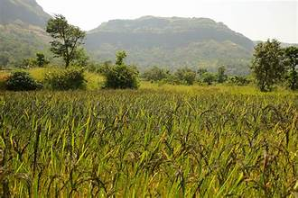
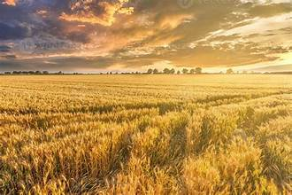

It helps farmers list crops online, connect with buyers directly, and get better visibility.
About Smart AgriConnect 🌾
Smart AgriConnect is a digital marketplace built to connect farmers and buyers directly. We empower agriculture using technology with trusted crop listings, weather insights, expert farming tips, and fast, farm-to-door transactions.

Our Mission
Empowering farmers with digital tools.

Our Vision
Making agriculture smarter and sustainable.
Quick FAQs
Yes, buyers can open crop detail pages to see pricing, location, grade, and quantity.
Yes, the platform is designed to be simple and useful for both small and large farms.